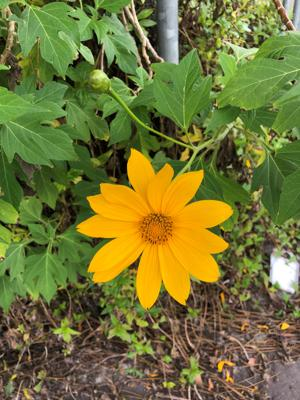
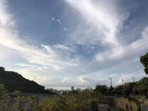
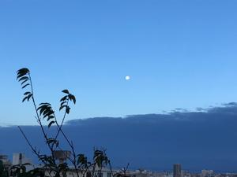
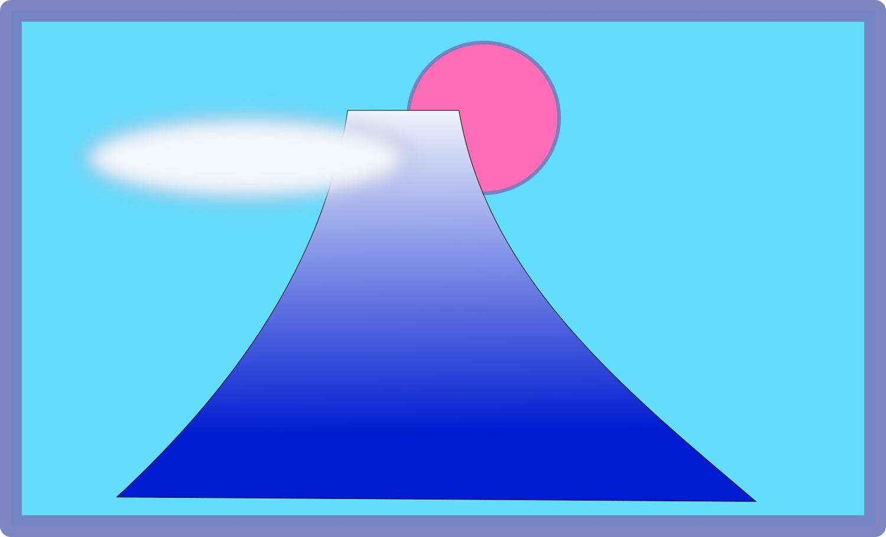

うるがいの話 ある日
最新: ２段階認証うるがいとは 前提知識です
カニの画像をクリックすると『うるがいの話』サイトを表示します|
|
【うるがいの話】 うるがい(ｳﾙｶﾞｲ urugai)とは、『もずくがに』の名前でとても大きくなります。 |
|---|---|
|
|
【Got cat カミマヤーの話】 たながー（ﾀﾅｶﾞｰtanagaa）とは手長えびのことで、何種類かあり大きいのは車 エビぐらいになります。 |

|
【ぶながぁの話】 ぶながー(bunagaa)とは、赤い髪の毛、赤い身体、そして身長は１ｍ２０ｃｍ ぐらい、川の蟹を食べているの目撃された。場所は沖縄県国頭郡大宜味村のと ある村僕の隣近所に住んでいる爺さんから、聞いた話です。 |
|
|
【ギーマの話】 ギーマ(giima)とは、山原の里山に咲くスズランに似た、 花を付けます。実は食べられます、 気が付くと口の周りが紫になっています。 |
2021年11月21日 (日）２段階認証
22:03
  
録画していた１週間分の朝ドラを見る。『安子（アンコ）、幸せに生きろ』と
オジーさんが亡くなっていく。山原の私の家族は、幸せに生きたのだろうかと
考える。ビットコイン紆余曲折あったが、やっと購入できた。費用含めて２万
２２０円、今現在純資産は１９，５０２（単純では７百円の減である）。ｇｉ
ｔｈｕｂで苦労させられたスマホアプリを利用した２段階認証が無事行えた。
難しい！、ヨメがＳＭＳを使った２段階認証と勘違いして簡単だろうがと言っ
たので、ムッとした。事前にゆうちょうから降り込んだ２万円を元にビットコ
インを購入しようとするが、画面が先物取引の画面で４万円ほど残高がないと
ダメ！と言われ、え、もっとお金がいるの・・、たまたま精通した子供が家に
きては話を聞くと、どうも私の勘違いのようだ。直にパソコンで画面をみると
購入とあるジャン、あっさり入金全額をビットコインの購入に充てる。何事も
経験である。それにしても、子供に比べ老人は覚えが悪い。動画の説明をみて
最初にインクスケープで作った富士山である。
